成功的、失败的都记。卡住的时候回头看：哪类改法有效、哪类总是白费，往往比再想一个新点子更有用。 ● 采用 ● 没采用 ● 部分 / 默认关闭
3 个上下颌咬合示例（16 / 46 / 45）的预备体按真实预备体的磨除量重做（邻面也磨、咬合面磨 2 mm）。16 号走体素模型。和原牙的平均差：16 0.18 → 0.33、46 0.25 → 0.44、45 0.30 → 0.50 mm—— 预备体更真实后整体变难（和评分卡一致：0.23 → 0.40 mm）；45 号原来“咬合空间不够”的提示消失（咬合面磨够了）。颈缘线都是自动检测。
模拟预备体评分卡上体素模型的牙尖 / 窝误差比线上大（和原来的天然牙比）。在真实预备体测试集 150 例上用同一套标志点和技师牙冠比：牙尖位置 1.38 → 0.90 mm、中央窝 1.51 → 1.08 mm、 牙尖数差 −0.5 → −0.05——体素模型更像技师设计；模拟卡上的差距是“天然牙 vs 技师风格”加上模拟预备体邻面磨得还不够。贴合起点换成扩散结果、加大平滑都没有明显帮助，保持形状模型起点。
上线：16 / 26 号预备体牙冠外表面 = 形状模型网格贴到体素模型的点上（PREP_VOXEL_MODEL，半精度权重 57 MB）；其他牙位不变。局部牙弓示例（真实 16 预备体）用体素模型重算。
真实预备体：CD-L2 0.404 → 0.338 mm · 牙尖 1.38 → 0.90 mm · 中央窝 1.51 → 1.08 mm
同一套量法比真实预备体（FDI 16 Crown Dataset，技师牙冠当原牙）和模拟预备体（原牙）：原来的模拟邻面几乎没磨（接触点处保留原牙面，近远中磨除量 0 mm，真实 1.0–2.0 mm）、 咬合面只磨 0.8 mm（真实 1.8）、颈缘线起伏 3.8 mm（真实 2.7），所以模拟预备体比真实的宽，体素模型（在真实预备体上训的）在上面反而变差。
新模拟（synthetic.REAL_PREP_KW，评分卡 --prep-sim real）：邻面也磨、切开和邻牙之间的三角形，颊舌磨除量各高度和真实相差 0.1 mm 内，咬合面 2.0 mm，颈缘线起伏 2.4 mm； 近远中中部 0.8 mm（真实 1.6，口扫拍不到邻面下部）。脚本 scripts/prep_stats.py。
新模拟下线上流程：外形误差 0.23 → 0.40 mm（真值颈缘线）、自动颈缘线偏差 0.31 → 0.55 mm——原来的评分卡高估了。体素模型和线上比：整体持平（磨牙 −0.016 mm，自动颈缘线）， 牙尖 / 窝误差略差（+0.07 / +0.22 mm），之前在旧模拟上的大幅变差（+0.056）是模拟太宽造成的。真实预备体上体素模型仍明显更好（0.404 → 0.338）。
模拟预备体：近远中磨除 0 → 0.8 mm · 咬合面 0.8 → 2.0 mm · 评分卡外形误差 0.23 → 0.40 mm（更真实）
VBCD 的代码不完整（导入的文件不存在、颈缘标记读成了曲率、裁剪中心用的是技师牙冠 = 真值），按论文结构自己实现：预备体 / 邻牙 / 对颌分 3 个通道放进 128³ 体素（20 mm、0.156 mm 一格，中心用预备体定）， 3D 残差 U-Net（2846 万参数）出牙冠表面占据 + 法向，表面体素再逐点精修（亚体素偏移 + 法向，曲率 / 颈缘加权的 CMPL 损失）。9513 例训练 20 轮，5 小时。
真实预备体测试集 1000 例：点云 CD-L2 0.327（中位 0.309），每例 53 毫秒。出网格：形状模型的网格细分一次、贴到体素点上（双向倒角 + 位移平滑，底边也跟着走）， 网格 CD-L2 0.338（中位 0.319），形状模型 0.404，VBCD 0.353，CrownFusion 0.412；双向平均距离 0.220 → 0.186 mm，95% 距离 0.47 mm，高度差 +0.04 mm，基本不穿对颌。贴合每例约 2.8 秒。
模拟预备体评分卡上 16 / 26 号反而变差（整体 +0.06 mm、偏高）：模拟预备体比真实预备体宽约 1.4 mm（磨得少），体素模型把预备体当成牙冠该在的位置。 所以先不接进网页的模拟预备体流程（代码已接好，设 PREP_VOXEL_MODEL 才启用）；要先按真实预备体校准预备体模拟。
真实预备体 CD-L2 0.404 → 0.338 mm（网格）· 0.327 mm（点云）· VBCD 0.353
误差分区：咬合面上部（高度 60–100%）占总误差约一半。参考 VBCD 试了三种办法，都从线上的修高度版接着训 15 轮：
① 曲率加权倒角损失（牙尖、沟、边缘嵴处权重大）：CD-L2 0.407，咬合面误差 −11%，但侧面变差，模拟评分卡和邻牙高度对齐变差 0.021 mm，不用。 ② 看邻牙的局部修正（每个顶点看最近 16 个邻牙点出修正量）：CD-L2 0.408 → 0.404（中位 0.380 → 0.375），模拟评分卡整体略好（−0.003 mm），上线。 ③ 两者组合（曲率加权 0.5）：CD-L2 0.399 最好，但模拟评分卡磨牙变差（+0.013 mm）、穿进对颌的点翻倍，暂不用。
结论：损失和局部模块只能带来约 1–2%；离 VBCD（0.353）剩下的差距更可能要靠它的高分辨率体素 + 点云精修结构。
真实预备体 CD-L2 0.408 → 0.404 mm（CrownFusion 0.412，VBCD 0.353）· 组合版 0.399 待修
看预备体表面的形状模型牙冠最高点比技师牙冠低 0.30 mm。从它接着训 15 轮，加外形 / 高度对齐（生成牙和技师牙冠三个方向的最大 / 最小坐标对齐，权重 1.0）。
真实预备体测试集 1000 例：高度差 −0.30 → −0.03 mm，CD-L2 0.426 → 0.408 mm（中位 0.398 → 0.380；CrownFusion 0.412、VBCD 0.353），双向平均距离 0.233 → 0.223 mm， 颈缘 0.13 → 0.14 mm，离对颌和技师一样（0.48 / 0.49 mm）。模拟预备体评分卡（天然牙磨成的预备体）略差：整体 +0.006 mm、牙尖 +0.16 mm（窝 −0.09 mm）。 真实预备体是实际用途，上线。
网页同时加了示例：上下颌咬合 + 预备体 3 例（叠加原牙）、局部牙弓真实预备体 3 例（离线算好，叠加技师牙冠）；可以只看原始牙、并排对比、看预备体贴合（间隙色图、剖面）。
真实预备体 CD-L2 0.426 → 0.408 mm · 高度差 −0.30 → −0.03 mm · 双向平均距离 0.233 → 0.223 mm
误差分区（真实预备体测试集）：侧面占 52%、咬合面上部占 46%。技师牙冠侧面离预备体的距离非常稳定（中位 1.49 mm，四分位 1.29–1.67）， 但形状模型之前只看颈缘线、不看预备体表面。加了预备体分支：整体特征 + 每个顶点看最近 16 个预备体点（软加权）出修正量；没有预备体时照旧。 对颌修正同时改成软的加权邻居（最近 32 个点按距离加权）：原来取最近 8 个点取最大，输入差 1e-6 mm 个别顶点会跳 0.5 mm，现在 0.016 mm。
真实预备体测试集 1000 例：CD-L2 0.445 → 0.426 mm（中位 0.417 → 0.398；CrownFusion 论文 0.412、VBCD 0.353），双向平均距离 0.246 → 0.233 mm， 底边到颈缘线 0.29 → 0.13 mm，侧面误差降约 15%。牙冠最高点比技师牙冠低 0.30 mm（原来 0.07），但离对颌的距离和技师一样（最近 10% 对颌点 0.49 mm）。 模拟预备体评分卡（114 颗，网页流程同样传预备体表面）：整体形状持平，牙尖位置 0.82 → 0.67 mm（64% 的牙更好，有统计意义），全自动流程牙尖 0.91 → 0.75 mm； 和邻牙比高度略低 0.03 mm。
咬合指标（按 CrownFusion 论文文字自己实现，技师牙冠同样算当参照；论文没给代码，数字不能直接和论文比）：技师 0.49 mm / 每 1000 点穿入 0.007； 线上原来的颈缘线模型 0.50 / 3.7；混合模型 0.45 / 0.005；现在 0.49 / 0.001。
真实预备体 CD-L2 0.445 → 0.426 mm · 颈缘 0.29 → 0.13 mm · 模拟评分卡牙尖 0.82 → 0.67 mm · 穿进对颌 0.005 → 0.001 / 1000 点
前向和损失一起 torch.compile（合并零碎的逐元素运算）；邻域卷积改成数学上相等的写法：先在每个点上做线性、再按邻居取（少算 16 倍）。 和混合训练同样的数据、设置并排训 15 轮：每轮 4.2 → 2.8 分钟，显存 10.4 → 6.2 GB。最后一轮验证 0.2870 → 0.2859 mm， 真实预备体测试集 0.234 → 0.233 mm，高度偏差 −0.064 → −0.067 mm，等于没变。默认关，网页推理不受影响。
顺带发现：按对颌修正的那一步取最近 8 个对颌点，输入哪怕差 1e-6 mm，选中的点换了，个别顶点会跳 0.5 mm。 这是模型本身的不连续（混合精度、编译后出现的“最大差几毫米”都来自它），以后可以改成软的加权邻居。
15 轮 62.5 → 42.6 分钟（快 1.47 倍）· 单步 147 → 93 ms · 验证 0.2870 → 0.2859 mm · 真实预备体 0.234 → 0.233 mm
提特征和解码器中间层用 bf16，找邻居、出坐标、距离和损失保持全精度。同样设置训 15 轮：63.3 分钟 vs 全精度 62.5 分钟； 单步 146 vs 143 ms。性能分析：时间主要在逐元素运算、找第 k 近点、按邻居取数这类搬数据的操作上，矩阵乘法只占约 3%，混合精度帮不上。 精度基本一样（验证 0.2858 vs 0.2870 mm，真实预备体测试集 0.232 vs 0.234 mm），但高度偏低更多（−0.107 vs −0.064 mm）。开关没有合进代码。 要提速得改数据搬运：合并逐元素运算（torch.compile）、找邻居换专用算子。
每轮 4.2 分钟 → 4.2 分钟 · 真实预备体距离 0.234 → 0.232 mm · 高度偏差 −0.064 → −0.107 mm
从网页原来的颈缘线形状模型接着训 15 轮，设置不变，数据 = 原来的天然牙（Teeth3DS + 咬合口扫）+ FDI 16 真实预备体技师牙冠训练集，共 46564 例，62 分钟。
真实预备体测试集 1000 例：距离 1.054 → 0.234 mm（和只用预备体数据训的专用模型一样），CD-L2 0.417 mm，颈缘贴合 0.277 mm。 模拟预备体评分卡（60 位患者 114 颗，和原模型并排）：整体形状不变或略好（倒角距离 −0.005 mm，64% 的牙更好），窝的位置更准（−0.16 mm）， 牙尖位置略差（+0.10 mm）；全自动流程下整体持平。真实预备体上提升很大、模拟上不变坏，所以上线。
顺带发现：重启 worker 时只带了 docker-compose.yml，会退回 CPU 版旧镜像（约 5 分钟，期间无任务）；
线上 worker 必须用 -f docker-compose.yml -f docker-compose.worker-gpu.yml。已恢复并从最新代码重建。
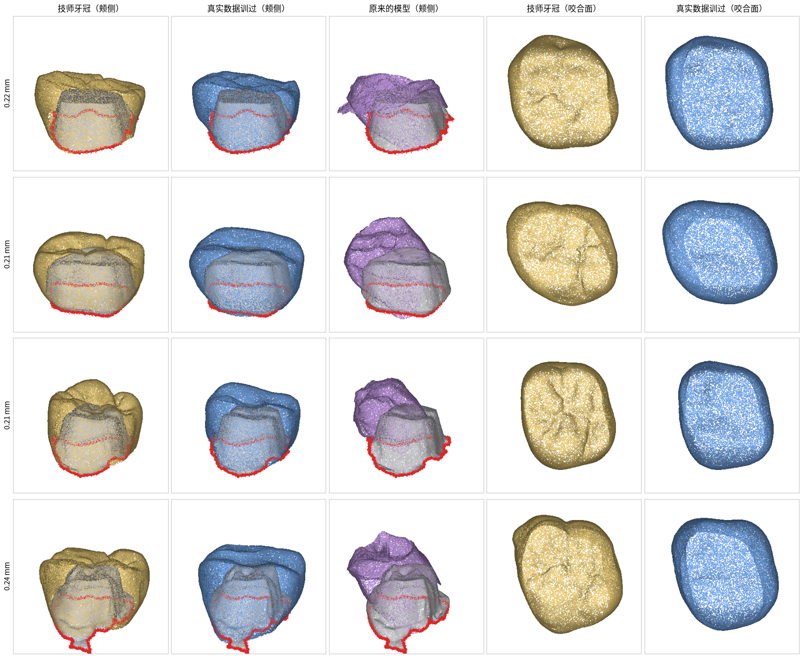
真实预备体测试集：距离 1.054 → 0.234 mm · 模拟预备体评分卡：倒角距离 0.280 → 0.268 mm · 牙尖 0.86 → 0.82 mm（中位）· 窝 0.72 → 0.58 mm（中位）
9513 个训练集技师牙冠做成细节库（1.7 GB）。形状模型出整体形状，在库里取外形最像的 48 颗，各自缩放、ICP、低频形变贴上去， 挑“细节起伏和形状模型隐约的起伏最一致”的那颗（比挑贴合误差最小的，位置相关 0.28 → 0.32），只取它 0.4 mm 以下的细节叠到形状模型上。
测试集 1000 例：距离不变（0.238 mm），沟窝深浅 61% → 75%，位置相关 0.31（形状模型自己 0.39）。和扩散模型一次采样差不多。 看图：库牙的沟是一条条连贯的线（扩散模型是碎纹），但浅，走向也不是这颗牙的。三种办法（扩散一次、扩散平均、细节库）在“深浅”和“位置”上都没有超过形状模型自身的位置相关—— 这颗牙的沟具体怎么走，从邻牙、对颌、预备体里很难推出来（技师之间本来也不一样）。
工程：细节库的候选贴合、采样、投影、细节相关改成 GPU 批量（lib_pick_gpu），结果和 CPU 版一致（距离 0.2461 / 0.2463 mm、位置相关 0.318 / 0.316），快 7 倍； 评测加了 --shard / merge，多进程并行。
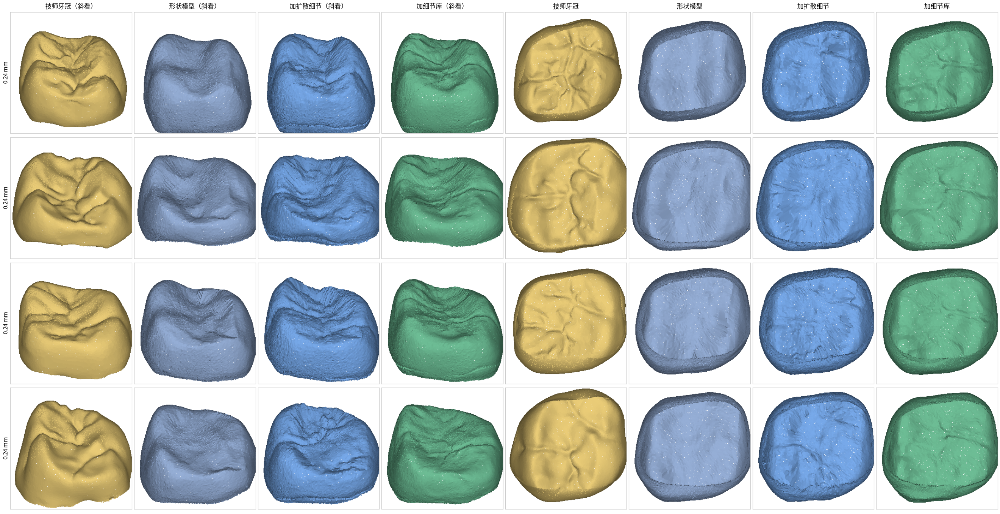
测试集 1000 例：距离 0.238 → 0.238 mm · CD-L2 0.399 → 0.400 mm · 沟窝深浅 61% → 75% · 位置相关 0.39 → 0.31 · 咬进对颌 0%
想法一：真实预备体的咬合面常顺着牙尖磨低，也许带着沟在哪的信息。量了 120 例：预备体表面的细节和技师牙冠沟窝的相关只有 0.07（形状模型自己 0.39），不值得加进条件。
想法二：一次采样的沟位置是随机的。同一颗牙采样 8 次取平均，再叠到形状模型上：位置相关 0.31 → 0.42（比形状模型的 0.39 也高）， 距离 0.236 mm、CD-L2 0.396 mm 都是目前最好；但沟的深浅只有技师牙冠的 66%（一次采样 88%），看上去又接近形状模型的光面。 放大 1.5 倍（验证集）：深浅 87%、位置 0.375——和一次采样同样深、位置好一些，但看起来仍是浅而碎。 结论：在“深浅”和“位置”之间只能取舍，这条路的上限大概就在这里；技师牙冠那种连成一气、边缘锐利的中央沟和颊舌沟，靠逐像素生成出不来。
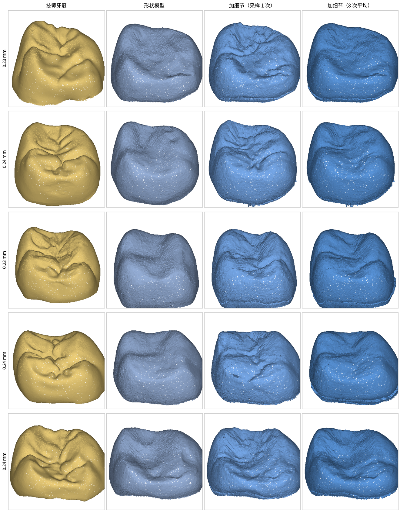
测试集 1000 例（8 次平均）：距离 0.236 mm · CD-L2 0.396 mm · 沟窝位置相关 0.42（形状模型 0.39、一次采样 0.31）· 深浅 66%（一次采样 88%）· 咬进对颌 0%
技师牙冠、邻牙、对颌转成径向深度图（9510 / 1000 / 1000 例），扩散模型从形状模型的输出出发、只学“技师牙冠 − 形状模型”（残差），训 30 轮（47 分钟）。 直接用它：沟窝幅度够了，但位置随机、整体形状也被带偏（距离 0.24 → 0.30 mm），一半样本咬进对颌。改成：采样时每一步限制离对颌 ≥ 0.1 mm； 最后只取它 0.4 mm 以下的细节、叠到形状模型上（大尺度全用形状模型的）。参数在验证集上定，测试集出数字。
结果：整体形状不变（0.238 → 0.236 mm），细节幅度从技师牙冠的 61% 提到 88%，没有咬进对颌的。但细节的位置和技师牙冠的相关度反而低了（0.39 → 0.31）： 扩散模型补的是“像牙的沟”，不一定是这颗牙该有的那几条；看图沟也还是浅、碎，不像技师牙冠那样连成清楚的中央沟和颊舌沟。网页还没用。 另外，网页缺牙用的现有细节模型直接拿来补技师牙冠没有帮助（相关度 0.79 → 0.74）。
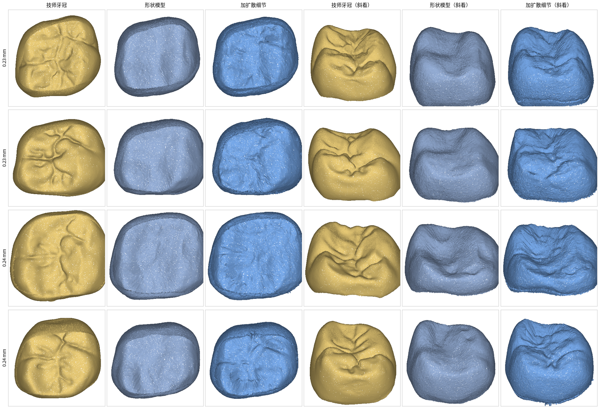
测试集 1000 例：平均距离 0.238 → 0.236 mm · CD-L2 0.399 → 0.398 mm · 细节幅度（约 0.3 mm 尺度，技师牙冠 = 1）0.61 → 0.88 · 细节位置相关 0.39 → 0.31 · 咬进对颌 > 0.1 mm 0.2% → 0%（技师牙冠 4%）
DTU / 3Shape 11-19 公开了 FDI 16 Crown Dataset（CrownFusion 论文用的）：11,513 例真实磨好的 16 号预备体 + 技师在 3Shape 里设计的牙冠 + 邻牙 15/17 + 对颌 45–47。 这是我们第一次有“真实预备体 → 技师牙冠”的配对（之前的 FDI 16 数据集只有天然牙）。
新评分卡（eval_crownfusion）：形状模型在数据自带的坐标里出牙冠外表面，颈缘线就是预备体网格的开边界，和技师牙冠比。 线上的形状模型直接用：误差 1.05 mm，牙冠整体往近中偏、偏小，底边离颈缘线 1.9 mm——它一直是“整口牙作上下文补一颗缺牙”，这里只有两颗邻牙。 在 9513 例训练集上接着训 20 轮（约 30 分钟），1000 例测试集上误差 1.05 → 0.23 mm，底边离颈缘线 1.88 → 0.27 mm。 按 CrownFusion 代码里的算法（两个方向最近点距离平方的均值相加再开方）是 0.425 mm（中位 0.398）；论文报的是 VBCD 0.353、CrownFusion 0.412、DMC 0.433 mm （它们用的是验证集还是测试集、取几个点没写清，只能大致比）。咬合面还是平滑的，沟窝细节是下一步。
测试集 1000 例：平均距离 1.054 → 0.234 mm · 95% 距离 2.93 → 0.62 mm · CD-L2（CrownFusion 算法）1.92 → 0.425 mm · 底边离颈缘线 1.88 → 0.27 mm（技师牙冠 0.52 mm）
网页漏检的缺牙里第一前磨牙最多（123 颗里 45 颗），多是报的牙数比实际多——正畸拔牙后间隙闭合，模型以为牙是齐的。 每个训练口扫多造 4 份以闭合缺隙为主的模拟数据（6241 个新样本，训练样本 4787 → 11027），从现用权重接着训 4 轮。 真实缺牙单独检出 60.1% → 59.4%，缺牙数对 71.3% → 69.6%，对照误报不变（21/80 颌）。模拟的闭合缺隙和真实的差别看来不在数量上。
顺带：TeethSplineSeg 的预处理瓶颈是最远点采样（CPU 每个 150 秒、GPU 挤满时 100 秒），改成 GPU 12 份 + CPU 36 份按速度分样本一起跑，4670 个用了 3.3 小时。
单独检出 60.1% → 59.4%（最后一轮同样 59.4%）· 缺牙数对 71.3% → 69.6% · 对照误报 21 → 21 颌
TeethSplineSeg 服务原来是在宿主机上手动起的进程，服务器重启后没了；网页连不上时自动退回只用自己的分割模型，没有报错， 所以重启后网页的真实缺牙检出一直停在约 54%。现在它是网页 compose 里的 splineseg 容器（以训练镜像为底，只补装推理要的包，不编 FlashAttention； 代码和权重只读挂载），和其他服务一样 restart: unless-stopped，只在 docker 内部网络可见。
真实缺牙检出（网页路径）：宿主机版 62.6% / 62.2%（两次）· 容器版 61.9% · 缺牙数对 77.6% / 75.5% · 每个颌约 15 秒
拆误差：几何方法从分割边界出发找棱。颊舌侧肩台它找得准（中位 0.07 mm）；邻面却被拉到轴壁等别的棱上，整条线（0.31 mm）比出发点（0.17 mm）还差。 改成“邻面留在分割边界、颊舌侧用棱、2–4 mm 平滑过渡”后模拟预备体上 0.31 → 0.13 mm。
但评测有漏洞：模拟预备体的邻面原来是渐变到 0、没有棱，真值正好在分割边界上；而且用的是备牙前的分割（完美）。 模拟改成邻面也磨出台阶（proximal_band 0.2），评测改成和真实流程一样在备牙后的扫描上重新分割，差距缩到 0.338 → 0.315 mm（55% 的牙变好）； 合成牙弓上分割偏 0.6 mm 的已有测试也会被它带偏。所以默认关闭（MARGIN_PROXIMAL）。
分割加模拟预备体：1348 个训练扫描各磨 1–3 颗牙（参数随机）接着训 12 轮。模拟预备体上预备体 IoU 0.893 → 0.936（95% 的牙变好），颈缘线 0.338 → 0.316 mm； 但真实缺牙检出 54.4% → 52.6%（磨牙 64.4% → 59.6%）——磨矮的牙桩认成牙以后，残留的缺牙位也更容易被当成牙。Cegep 真实备牙口扫上目视也看不出改善。不换。
颈缘线误差中位数（重新分割、邻面台阶模拟，118 颗）：现在 0.338 · 邻面版 0.315 · 新分割 0.316 · 新分割 + 邻面版 0.300 mm · 分割完美时 0.302 / 0.259 · 真实缺牙检出 54.4% → 52.6%
上一条（颈缘线加在扩散模型上）没用，是因为整体形状由形状模型定。这次直接给形状模型加颈缘线分支：颈缘点 → 点云编码 → 256 维，接在全局特征后面（新权重从 0 开始）。 训练数据现成——缓存里每颗牙本来就有边界环点（天然牙的颈缘线），加 ±0.1 mm 偏移、±0.15 mm 起伏、一半样本去掉一段弧，15% 不给。从线上形状模型接着训 15 轮（50 分钟）。 预备体评分卡（114 颗逐颗配对）：真值颈缘线时整体形状明显更准，自动颈缘线（误差约 0.3 mm）时小幅变好；咬合、和邻牙的高度、贴合都不变。 再把扩散模型也换成颈缘线版，几乎没有额外收益，不加。网页上只换预备体外表面的形状模型（PREP_SHAPE_MODEL），缺失牙不变。
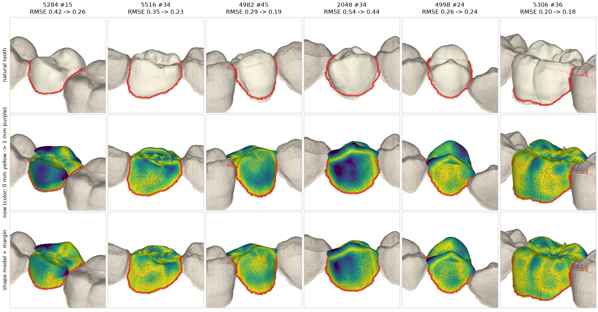
整体形状 rmse 中位数（真值线）0.256 → 0.234 mm，70% 的牙变好 · chamfer 0.289 → 0.278 · 自动线 rmse 0.298 → 0.290、chamfer 平均 −0.010 mm · 牙尖 0.89 → 0.82 mm（不显著）· 咬合间隙、邻牙高度、粘接间隙不变 · 形状模型验证误差 0.360 → 0.301 mm
扩散模型的条件多两个通道：颈缘线投到径向图上的深度和有无。训练时直接取天然牙径向图的外边缘（牙和牙龈的分界）当颈缘线，加 ±0.1 mm 偏移、±0.15 mm 起伏、随机丢点，15% 不给。 从细节损失版接着训 20 轮，给真值颈缘线时验证深度误差 0.47 → 0.32 mm。 但放进预备体流程（115 颗模拟预备体，逐颗配对）：从形状模型出发补六成细节时和现在持平——整体形状主要由形状模型定，底部 2.5 mm 本来就被几何方法贴到颈缘线上； 从噪声完整生成则明显变差（形状、牙尖、咬合、和邻牙高度都差）。不换。代码留作开关 PREP_OUTER_MODEL / PREP_OUTER_REFINE，默认不用。
整体形状 rmse（真值线 / 自动线）：现在 0.256 / 0.298 · 条件模型补细节 0.250 / 0.298 · 条件模型完整生成 0.282 / 0.377 mm（中位数）· 完整生成牙尖误差平均 +0.17 / +0.21 mm
11-22 在 Poseidon3D 上微调的两个分割模型（常规、难例加权），在它们自己的困难集上检出缺牙 17 → 19、牙号错标 47 → 41。 拿到网页同一路径的真实缺牙评估（Bite2Text 190 个缺牙颌 + 80 个对照颌）上，和现在的模型用同样的代码、同样的朝向归一化重跑对照：检出都低 2–3 个点，只有前牙略好、对照颌误报略少。不换。
检出 54.4%（现在）/ 51.6%（常规）/ 52.6%（难例加权）· 缺牙数对 67.7% / 65.6% / 67.4% · 前牙 55.1% / 55.1% / 56.5% · 前磨牙 44.6% / 41.1% / 42.0% · 对照误报颌 20 / 20 / 18
服务器重启后网页四个容器停了 3 天没人发现。docker-compose.yml 里都加上 restart: unless-stopped，重启 / 断电后 docker 自己拉起。
130 组模拟预备体完成四组对照，122 组冠均封闭。独立测试的 42 组里，几何自动线换成模拟真值线后，成品平均边缘偏差中位数 0.235 → 0.073 mm。
214 个正式测试扫描完成配对。困难组的 22 个牙弓内部缺牙位，现有模型检出 17 个，两组微调均检出 19 个。常规微调错号较少，难例加权在常规集误报增多。
85 个代型训练，两组各 8 轮。裁剪切牙与裁剪公开代型的平均误差分别从 0.227 和 0.335 降到 0.181 和 0.260 mm，等待真实局部口扫复验。
88 颗冠的 176 个邻面用深度、面积与开放边缘相交分项复核。全四模式、三模型正式对照保留纯形状基线。
代型上训的模型放到口扫上几乎猜不对（符号对 61%）。在 1986 例真实口扫上模拟磨出 3597 颗预备体当训练数据，接着训 120 轮。 模型本身学得不错，但原来的取线要求零等值线连成闭合的一圈，口扫裁剪块在邻面处被截断，40 个里 26 个取不出线。改成“按绕牙轴的角度分 120 份、每份取中位点”后 120 个里取到 119 个。 可是在预备体评分卡上和几何方法（平滑 4）同一批牙比，颈缘误差持平，不采用；口扫上训的模型放回单独代型上也不行（差 7 mm，没有牙龈）。几何方法平滑 4 本身让评分卡颈缘误差 0.357 → 0.305 mm。
验证集（模拟预备体）0.265 → 0.148 mm · 评分卡同 84 颗：几何 0.303 / 学习式 0.306 mm（中位）· 95% 0.925 / 0.961 · 组织面间隙 95% 0.082 / 0.049
上一轮外表面换成我们的模型会碰对颌，原因是用了缺失牙的“牙库设计风格”（窝沟更深、牙尖更高）。预备体单独用天然风格后不碰对颌了，整体形状仍比镜像对侧牙好，已上线（PREP_OUTER=learned、PREP_OUTER_STYLE=natural）。 牙尖位置还是镜像更准，留着以后看。
均方根 0.346 → 0.295 · 高度偏差 −0.335 → −0.185 · 离对颌 +0.16 mm（不碰）· 牙尖偏差 0.754 → 0.926（变差）
模拟预备体上“先验”（往分割给的起点拉）一加误差就降一大截，但模拟预备体的真值线恰好就在分割边界上，等于把答案喂进去了。 换到 52 个真实代型、起点故意偏 0.3–1.0 mm 再比：先验只在起点几乎正确时有用，偏 0.6 mm 以上反而更差，不采用。平滑权重 2 → 4 持平或略好，改成默认。
真实代型（起点偏 ±0.6 mm 内）：默认 0.14–0.15 mm · 平滑 4 持平 / 略好 · 先验 2 起点偏 1.0 mm 时明显变差
两个口扫数据集解压、解析好存成 npz（Bite2Text 1986 例 11 GB、每例 11 ms；Teeth3DS 1800 例 9.8 GB、每例 22 ms），不再每次从 zip 里解。 分割结果和模拟预备体按“网格内容 + 模型版本”做键存盘（data/cache），评分卡第二次跑直接读。
with_gpu.sh 退出时用相对路径删暂停标记，换了目录就删不掉，空闲训练一直以为有人在用 GPU（15:55–18:30 闲着）。改成绝对路径，守护进程也只认进程还活着的标记。
真正的目标是套在预备体上的牙冠，但一直没法量。现在在真实口扫（Bite2Text）上把前磨牙、磨牙按临床磨除量（轴面 1 mm、咬合面 1.5 mm、6° 聚合、肩台）磨成预备体， 颈缘线真值和原来的牙都已知，115 颗。顺手修了一处：邻接、补厚度之后没有再查咬合，离对颌只有 0.03 mm（设定 0.3），补上最后一遍后 0.18 mm。 结论：给对颈缘线时组织面贴合很好（粘接间隙正好 0.03 mm、几乎不戳进去、100% 封闭）；现在最大的短板是自动颈缘线（平均偏 0.36 mm，95% 在 1.1 mm 内，临床要 0.1–0.2）。 外表面换成形状模型 + 扩散（和缺失牙一样）：整体形状好 16%、高度更准，但牙尖位置比镜像对侧牙差、会碰到对颌，暂不换。
自动颈缘线：颈缘误差 0.36 mm · 均方根 0.346（镜像）/ 0.291（我们的模型）· 牙尖偏差 0.754 / 0.917 · 离对颌 0.18 / −0.02 mm · 封闭 100%
同一个网络、同一份数据，训练目标换成直线流（Flow Matching），从现在的模型热启动训 15 轮。同样的风格引导 + 抹平下，和网页的蒸馏版持平或略差。 和“表示已经到头”的判断一致：只换训练方式不够，要换 3D 表示 + 更强的网络。
形状误差 0.262 / 0.265 · 牙尖 0.758 / 0.774 · 中央窝 0.754 / 0.864 · 挤进邻牙 16.2% / 21.9%
在二选一的基础上，另一个模型报缺、选中的模型却分出来的牙，把那块换成另一个模型的标签。前牙、磨牙变好，前磨牙掉 8 个点，牙号也更容易乱。不采用。
检出 62.6% / 62.2% · 缺牙数对 77.6% / 76.2% · 前磨牙 50.9% / 42.9%
守护进程（scripts/gpu/idle_trainer.sh）每分钟看一次显卡：没有别的任务就训长期任务（runs/idle_jobs.txt，现在是主扩散模型）， 有任务要用（with_gpu.sh 放标记，或者显卡上出现别的进程）就让训练存好检查点退出，空下来 3 分钟后接着训。实测 20 秒内让出显卡、3 分钟后从检查点接着训。
第二磨牙的库牙每颗试 16 颗候选（原来 6 颗）重新对齐，末端牙模型接着训 6 轮再蒸馏。末端牙评分卡上 4 项里只有 2 项变好，没达到“至少 3 项更好”的上线条件，网页继续用原来的。
位置 0.826 → 0.826 · 牙尖 1.818 → 1.842 · 中央窝 1.959 → 1.873 · 均方根 0.667 → 0.659（mm，末端牙 154 颗）
上次 30 轮微调里第 0 轮最好——那一轮还在预热，学习率只有 1e-4，之后升到 1e-3 就越训越差。这次从第 0 轮的权重出发，学习率固定 1e-4 训 6 轮。 比现在的好，已换上分割服务。
TeethSplineSeg 单独检出 58.0% → 60.1% · 缺牙数对 67.1% → 71.3% · 二选一估计 61.9% → 63.3% · 网页路径实测 62.2% → 62.6%，缺牙数对 75.2% → 77.6%，对照误报 20 → 21 颌 · 对照误报 22 → 21 颌
两个模型各有长处：TeethSplineSeg（我们用模拟缺牙数据微调过）前牙、磨牙强，我们的模型前磨牙强。每个颌两个都分一遍， 各自数“缺了几颗”，用报缺多的那个。TeethSplineSeg 做成了单独的分割服务（模型常驻，一个颌约 17 秒），网页 worker 自动调用；服务没起时只用我们的。 这里的数字是按网页实际调用的路径（先摆正朝向、发给服务）在 190 个真实缺牙颌上重新跑的。
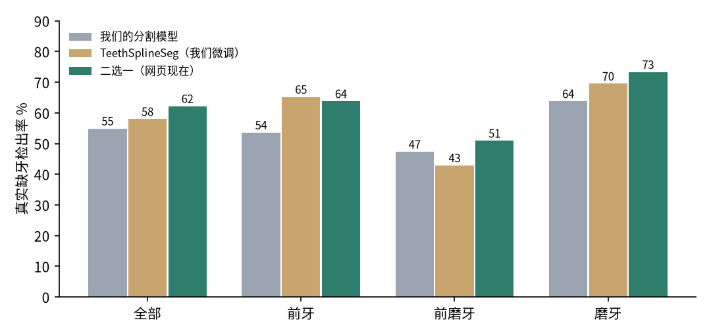
真实缺牙检出 54.9% → 62.2% · 对照颌（报告没提缺牙）误报 20/79 颌（原来 20/79）
先以为是扎得太深、咬合调整没看到（把精确距离的范围放大到 4 mm，只降了 0.6 个点）。拿穿入的病例逐点看：穿入的点全在封底那部分。 末端牙后面没有邻牙，牙龈往后升高（磨牙后垫），贴着牙龈封的底跟着升高、顶进对颌；而最后一轮咬合调整只动牙冠部分。改成封底也能沿咬合方向往下退。
末端牙：穿入 13.1% → 0%，其余持平 · 普通牙：穿入 0%，形状误差 0.262（不变），都封闭
发现扩散模型的训练数据里 7 号牙只有 600 颗（1–5 号各五千多）：投影中心定在缺隙两侧邻牙的中点，只有一侧时就落在邻牙底下， 末端牙投不出来、被当成坏样本扔掉了。网页上也一样：154 颗末端牙里 150 颗退回了形状模型，扩散补细节根本没跑。 改成只有一侧时沿牙弓往外推一个牙位定中心，补了 5139 颗末端牙样本，单独训一个末端牙模型（同样蒸馏了风格引导），只用在末端牙上。
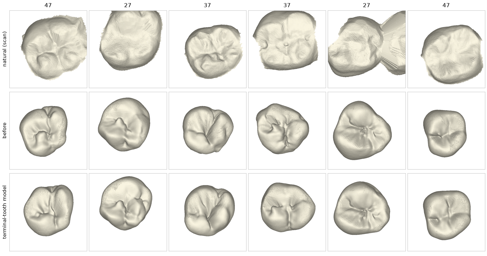
末端牙专项评分卡（154 颗）：位置偏差 1.011 → 0.832 mm · 牙尖偏差 2.085 → 1.833 · 中央窝偏差 2.380 → 1.958 ·
均方根 0.707 → 0.664 · 挤进邻牙 8.5% → 5.2% · 咬合调整后仍穿入对颌 5.9% → 13.7%（变差，待修）
老师 = 每一步算两遍、放大 4 倍的模型；学生的设计风格类别直接学老师的输出。网页只需算一遍，效果持平略好。
牙尖偏差 0.768 → 0.758 · 中央窝偏差 0.757 → 0.754 · 挤进邻牙 18.9% → 16.2% · 窝沟深度 1.972 / 1.962（持平）
把对齐好的库牙按牙位平均，铺到形状模型的穹顶模板上，从“库牙 + 偏移”出发接着训 20 轮。验证误差停在 0.38 mm（原来 0.36）， 评分卡上挤进邻牙 16% → 70%：库牙平均形状和每个病例的牙差得多，偏移要从头学，原模型几十轮的积累丢了。不采用。
形状误差 0.262 → 0.333 · 牙尖偏差 0.758 → 0.918 · 挤进邻牙 16.2% → 70.2%
同一个模型每一步算两遍（设计风格、天然风格），把两者的差放大 w 倍（和文生图里的 classifier-free guidance 一样），不用重新训练。 w 越大沟越深，但 w≥3 时表面冒出细麻点；生成后在牙冠范围内轻轻抹平 0.8 像素，麻点去掉、沟留着。 再配上训练时加“细节损失”（预测的牙冠和答案的 1–3 像素起伏对齐）的模型，是这一夜最好的组合。 窝沟深度最接近真牙，中央窝、牙尖位置都更准，挤进邻牙也更少。
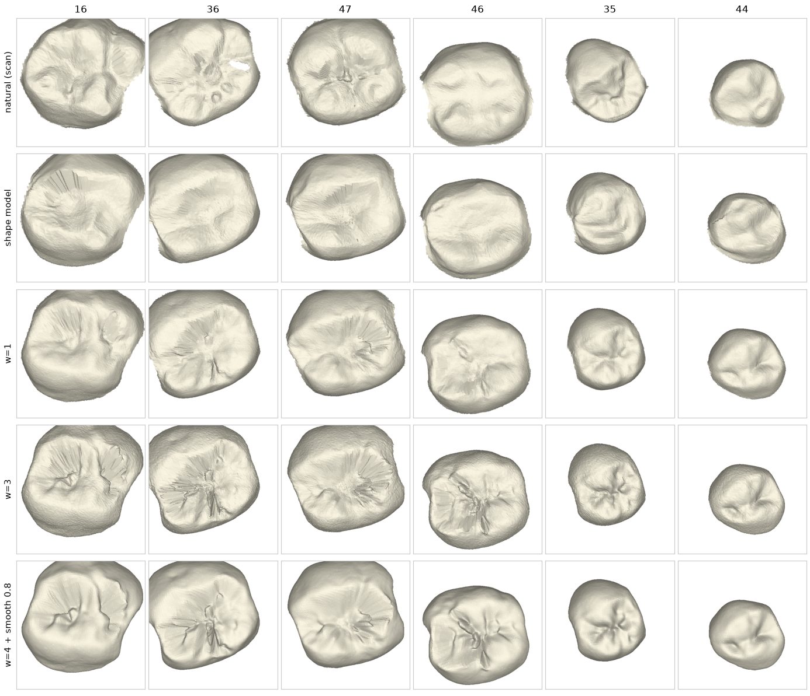
窝沟深度 1.919 → 1.972 mm（真牙 2.002）· 中央窝偏差 0.845 → 0.757 · 牙尖偏差 0.797 → 0.768 · 挤进邻牙 20.6% → 18.9% · 形状误差 0.264 / 0.263（持平）
① 只在去噪前中段加强风格（想避开麻点）：麻点没了，深沟也一起没了，沟是最后几步才刻出来的。 ② 直接把细节部分乘 1.3 / 1.6：噪声一起放大，误差翻倍。 ③ 推理时把库牙对齐到形状模型的输出、移植它的高频：对齐误差 0.40 mm，沟的位置对不上，细节量反而略降。 结论：细节要让模型自己长出来（引导、训练），拼接别人的细节对不上位置。
新数据里有 160 套 exocad 牙库（2550 颗设计级牙形）。给每颗训练牙挑同牙位的库牙，在 GPU 上批量对齐（旋转 + 平移 + 缩放，双向最近点）， 对得上的约 2.8 万颗（84%）。邻牙、对颌这些条件不变，只把答案换成库牙，模型多学一组“设计风格”类别，生成时可选。从网页默认的扩散模型接着训 12 轮。 结果：设计风格比网页默认小幅变好、没有变差的项；但窝沟深度、细节量几乎没变：形状锁住后扩散只补细节，库牙锐利的沟只学到一点。 11-16 晚已换成网页默认（RADIAL_STYLE=design；旧模型留作 models/generation/radial_diffusion_natural_1114.pt）。
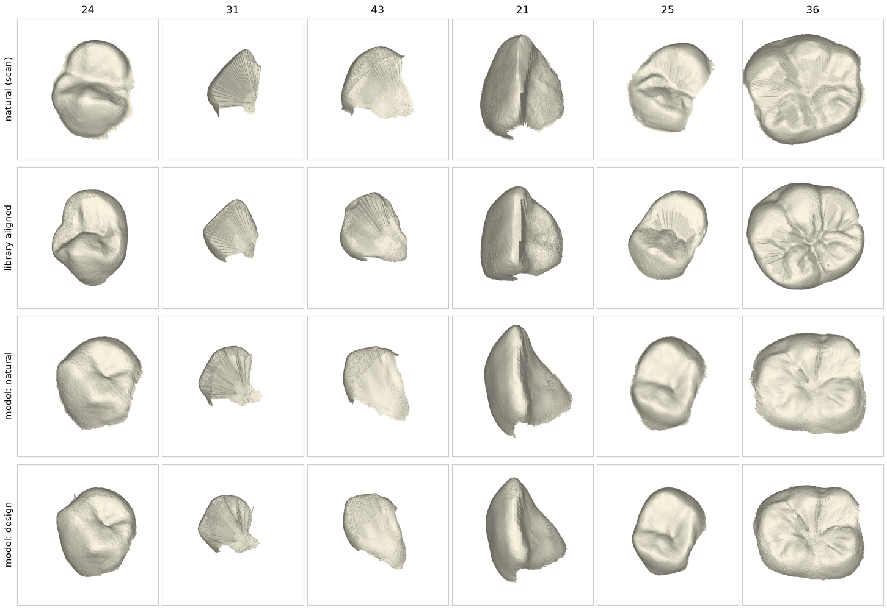
形状误差 0.267 → 0.264 mm · 均方根 0.328 → 0.318 · 中央窝偏差 0.864 → 0.845 · 挤进邻牙 22.8% → 20.6% · 牙尖偏差 0.794 / 0.797（持平）· 窝沟深度 1.909 / 1.919（持平）
残差版：扩散模型只学“真牙 − 形状模型”。加上低频锁后，三种做法（现在的默认、残差版、看着形状模型补细节）各项指标都在误差范围内打平，没有采用。 唯一突出：残差版在不做咬合调整时穿进对颌从 26% 降到 11%，说明它学会了避开对颌，但流程里的咬合调整本来就会兜住。 结论：形状锁住以后，换细节模型对这些指标影响很小；要再往上提，得换更强的表示（3D 形状潜空间）和模型（Flow Matching + Transformer）。
形状误差 0.272 / 0.272 / 0.272 mm · 牙尖偏差 0.835 / 0.822 / 0.838 · 中央窝偏差 0.858 / 0.920 / 0.843 · 挤进邻牙 20.6% / 21.1% / 18.9%
公开最好的分割模型之一（PTv3 + 牙弓 B 样条）。同一批扫描、同一套后处理，只换分割模型：标准测试集上它强，真实缺牙上它弱。 原因推测：它只用牙齐全的口扫训练，牙弓先验默认牙是连续的；我们训练时加了模拟缺牙。结论：用它的结构 + 我们的缺牙数据自己训练。
公平测试集 T-mIoU 87.4%91.8%（它更好）· 真实缺牙检出 我们 54.9% / 它 47.6% · 前磨牙 我们 47% / 它 30%
径向深度图投影快 5–15 倍；口扫解析一次存成网格缓存；分 GPU 进程并行。TeethSplineSeg 的预处理原来单进程逐个做最远点采样（每个扫描 9 秒），找到原因后改成 16 个进程共用 GPU。 教训：GPU 预处理和训练同时跑，会把训练拖慢好几倍，要错开。
把形状模型的输出当条件、真牙当目标，从扩散模型接着训 25 轮。从纯噪声生成或从形状模型加噪 0.6 再去噪，形状都不如现在的默认做法。 规律：给模型“看”形状不够，要在生成的每一步强制保留形状模型的低频（现在默认的做法）。
形状误差 默认 0.272 / 纯噪声 0.329 / 加噪 0.6 0.292 mm · 中央窝偏差 默认 0.86 / 1.50 / 1.18 mm
形状模型的牙冠投到径向深度图，加噪到 600/1000 步再去噪，每步把低频换回形状模型的。不需要重新训练。网页默认生成器换成它。
相对邻牙高度 +0.130.00 mm · 咬合接触面积 7.44.5 mm² · 挤进邻牙 25%21% · 形状误差 0.2790.272 mm
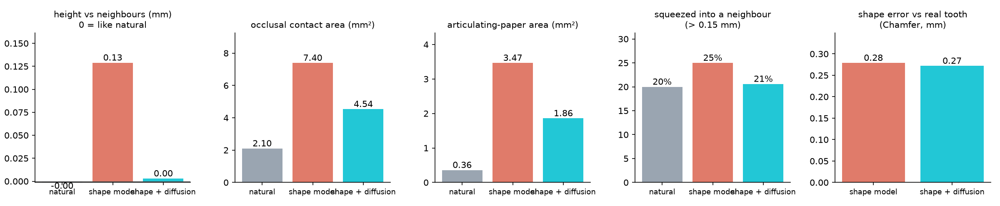
3.4 万颗牙、30 轮、2.5 小时。咬合接触面积、挤进邻牙更像天然牙，但整体形状明显更差。启发了上面的组合做法。
形状误差 0.28 → 0.37 mm · 中央窝偏差 0.84 → 1.80 mm
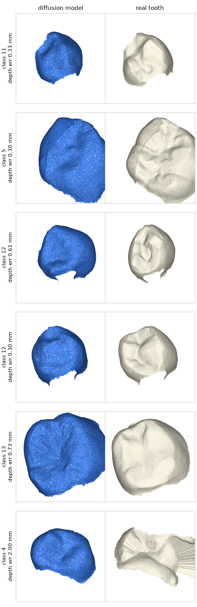
牙尖 / 中央窝标志点误差、RMSE、Hausdorff、虚拟咬合纸面积（照 CrownGen、MADCrowner 等论文的量法）。已知问题：低矮的磨牙牙尖会漏检。
想让评分卡直接当损失。结果牙冠被撑大。
挤进邻牙 25% → 52%
每个点看最近的 8 个对颌点；对颌按“牙冠上方 4 mm 厚的一片”裁剪，训练和推理一致。封底会切掉接触点，封底后在实体上再调一次邻接。
直接输出穿进对颌 48%5% · 邻接有缝 38%3.9% · 要求接触却没咬上 6.6%1.3%
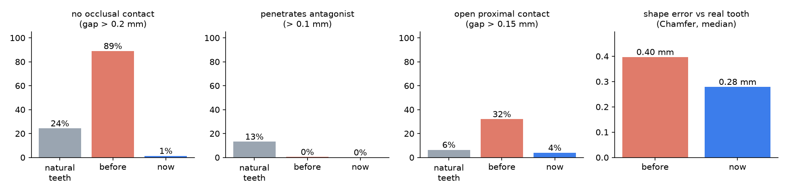
以前整颗牙往下平移到不碰，89% 完全咬不上。现在照技工的做法两步走。点到曲面距离搬到显卡上算。
目标“刚好接触”时没有接触 89%~1%
同一套量法量天然牙和生成牙，天然牙的分布就是及格线：邻接、咬合、形态、和真牙的误差。Bite2Text 60 位患者、235 颗牙。顺带查出邻接调整常常没生效、STL 导出失败两个 bug。
看失败病例发现：间隙闭合时模型把一颗牙切成两个号来凑 14 颗。后处理里合并。
真实缺牙检出 43%55%（含相邻牙位 72%）· 代价：牙齐全时误报 1.3% → 3.4%
方向对，但模拟的闭合只是平移，和真实病例差距大。
真实缺牙检出 41% → 43%
医生报告里抽出 286 颗确认缺失的恒牙。模拟缺牙检出 9 成，真实只有 41%：第一次看清模拟和真实的差距。
学习模型给外形，从真牙库里贴牙尖窝沟。外观更有细节，但误差略大。默认关闭。
单颗缺失 0.30 → 0.33 mm
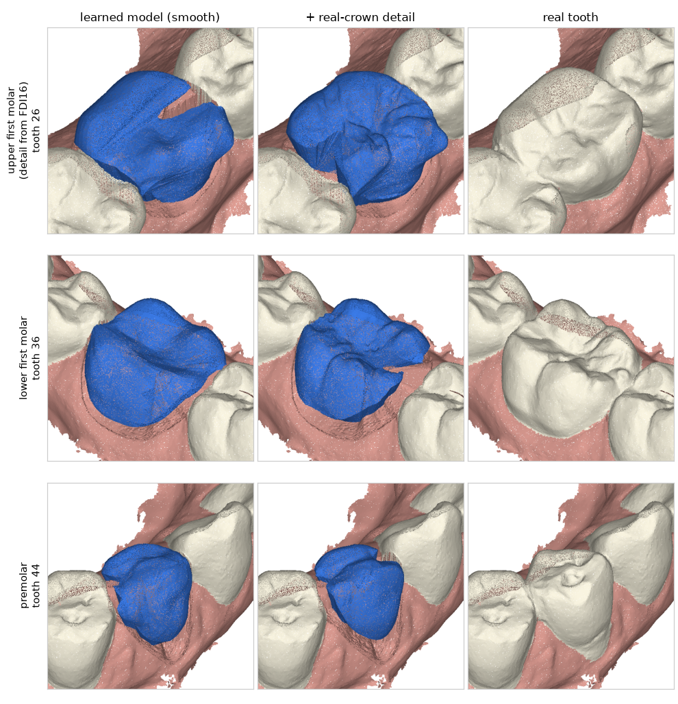
各牙位误差中位数 0.0850.038 mm · 最差一例 2.170.46 mm
网络看其余牙齿，直接把模板牙变形成缺失牙。比对侧镜像 / 标准模板准，但表面偏平滑。
单颗缺失 0.470.30 mm · 左右都缺 0.700.32 mm
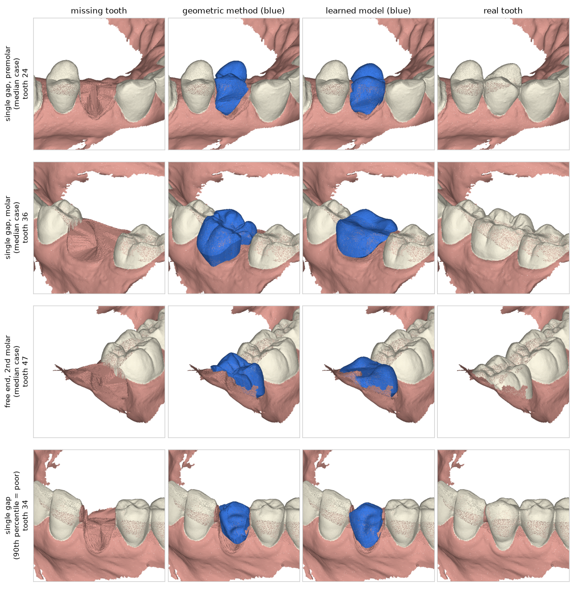
幻影牙 41%0% · 模拟缺牙检出 23%91%
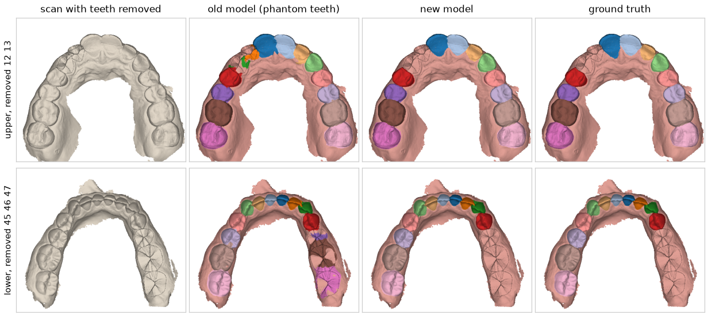
不需要初始线。切牙测试集 0.085 mm（几何方法约 0.13 mm）。还没接进整颌流程。
Teeth3DS 两套划分的测试集有 426 个扫描在对方训练集里，统一用交集 174 个。生成评估加双向 Chamfer、F-score（mm）。
上颌坐标系、编号顺序、孤立顶点（7%）、Poseidon3D 左右手性相反…… CPU 基线、DGCNN、模板库、游离端统计、任务队列。
分割 → 缺牙检测 → 生成 → 颈缘线 → 预备体牙冠的完整流程（全部几何方法 + TGNet 服务）、标注编辑器、编号纠错、Docker 部署。